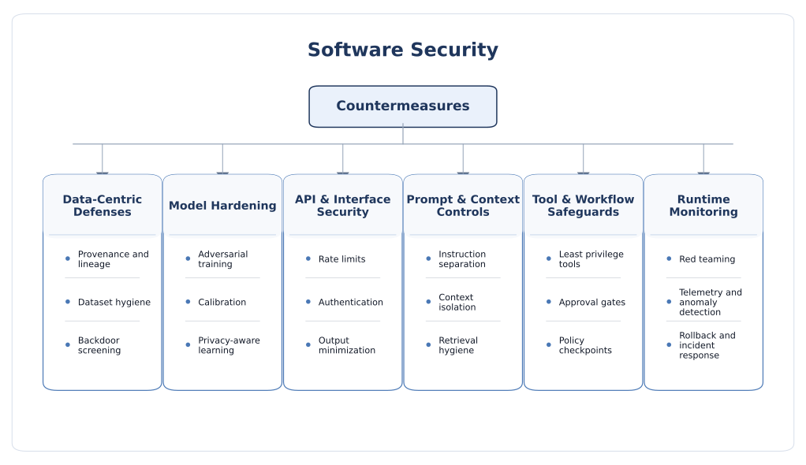
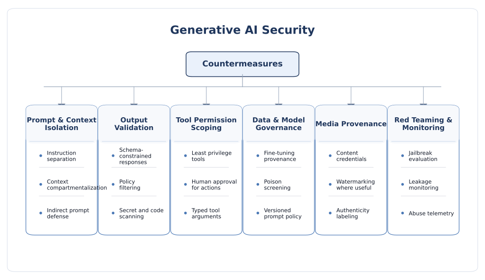
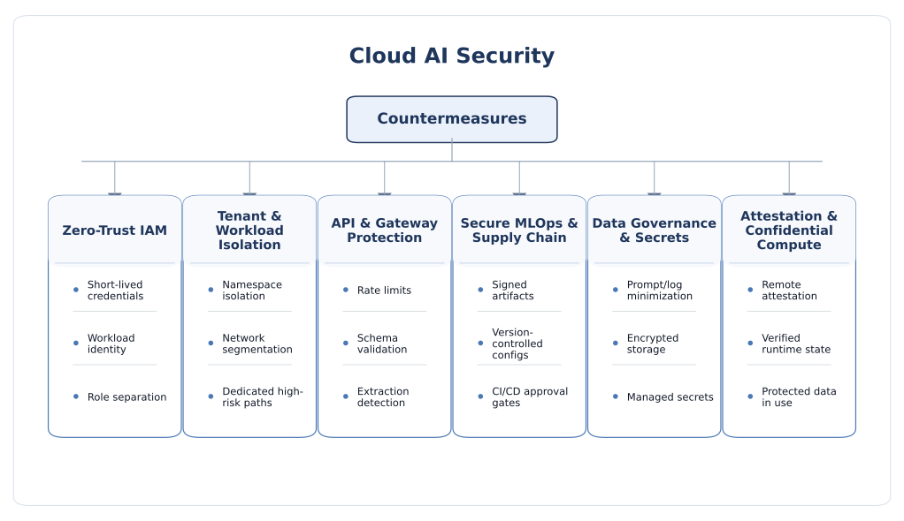
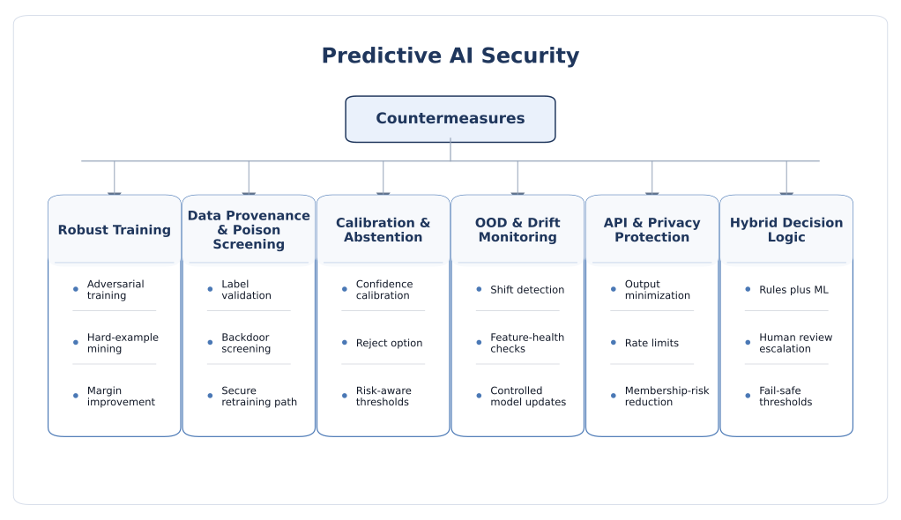
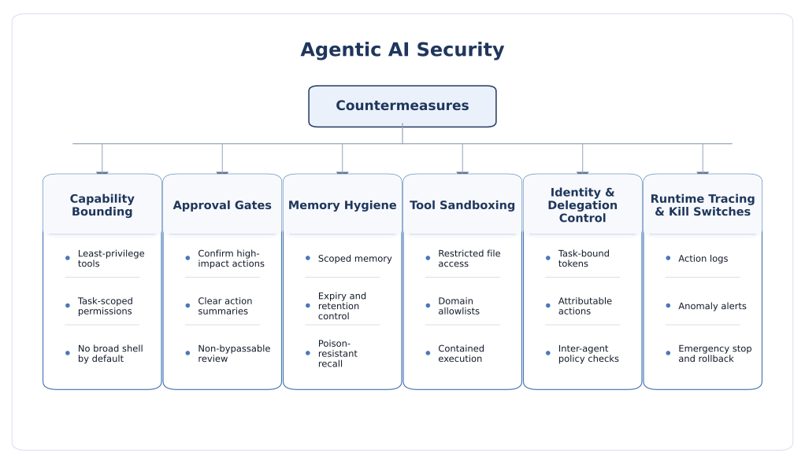
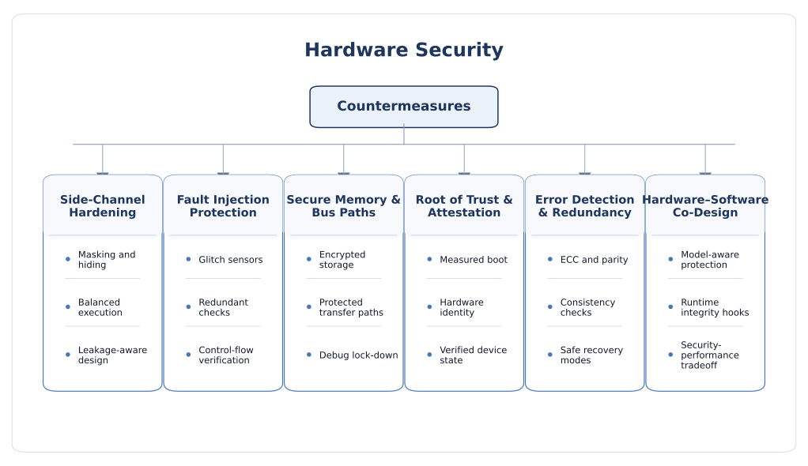
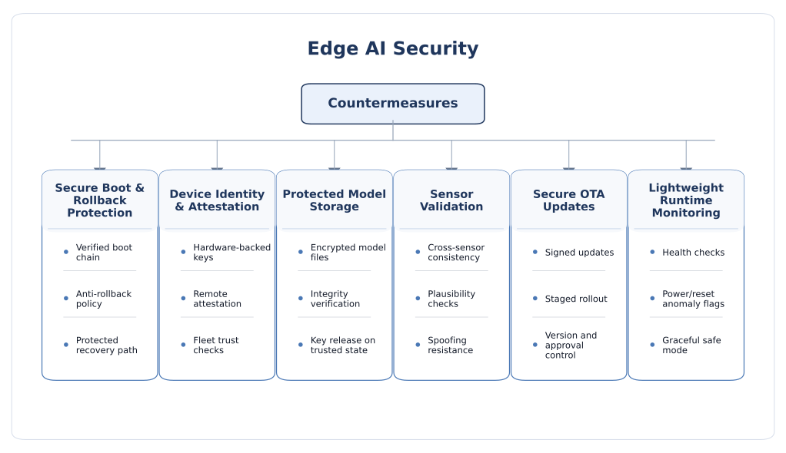
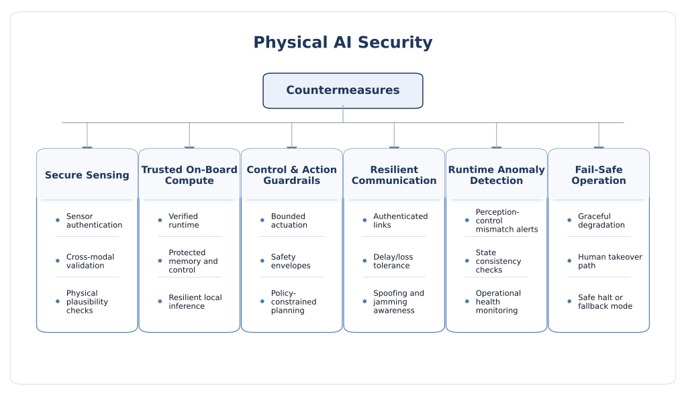

Countermeasures
Countermeasures for AI security should not be discussed as a flat list of defenses. The important questions are: which threat a defense actually addresses, what trust assumptions it makes, what overhead it introduces, what kinds of failures it cannot stop, and whether it still works when combined with retrieval, agents, cloud orchestration, edge hardware, and physical-world actuation.
How to read this page
This page is the defense hub of the website. The goal is not to claim that one family of protection solves AI security. Instead, the goal is to compare countermeasures in a way that is useful for researchers, reviewers, and system builders. A strong defense should be understood through five questions: what it protects, how it works, what it costs, what assumptions it relies on, and how it fails under adaptive attack.
That comparison matters because many AI defenses are narrow by construction. Adversarial training may improve robustness to one perturbation family but does little for tool misuse or model extraction. Prompt filtering may reduce low-effort jailbreaks but does not guarantee safe agent action. Secure boot and attestation can protect edge integrity, yet they do not solve poisoned data or harmful retrieval content. Reviewers therefore usually care less about whether a defense exists in principle and more about whether it remains meaningful in the actual deployment stack.
A reviewer-friendly evaluation lens
- Threat coverage: which attack classes are addressed and which are out of scope?
- Layer of action: does the defense act on data, model, interface, orchestration, hardware, or lifecycle?
- Trust assumptions: does it assume trusted data sources, trusted hardware, honest users, or non-adaptive attackers?
- Cost and overhead: what accuracy, latency, compute, memory, energy, and usability penalties does it introduce?
- Composability: does it still work when retrieval, tools, agents, cloud services, or physical sensors are added?
- Failure mode: when the defense fails, does it fail safely, noisily, or silently?
Why defense-in-depth matters more than single techniques
AI security is now too broad for one-layer defenses. Software-side robustness, model governance, prompt isolation, API control, runtime monitoring, secure deployment, and hardware trust must often be combined. The design principle is therefore not “pick the best defense,” but “build a stack where weaknesses in one layer are constrained by the next.” In practice, the most reliable systems use prevention, containment, detection, and recovery together.
Countermeasure atlas across AI security layers
The diagrams below summarize the main countermeasure families for each security domain discussed in this website. They are intended as visual anchors for reviewers: not exhaustive, but structured enough to show how defensive thinking changes from software and cloud systems to agents, hardware, edge devices, and physical AI.








How threat model should drive defense choice
The first mistake in many AI defense discussions is to start from techniques instead of from attack structure. Defenses only make sense after the threat model is fixed. The relevant questions are: at what lifecycle stage does the attacker intervene, what assets are valuable, what access do they have, what physical or cloud assumptions hold, and whether the defender cares most about integrity, confidentiality, availability, safety, or abuse prevention.
Lifecycle view of threat-to-defense matching
- Before training: provenance, curation, dataset screening, supplier trust, labeling controls, and artifact governance matter most.
- During training or fine-tuning: poisoning resistance, robust optimization, privacy controls, secure MLOps, and evaluation gates become critical.
- At serving time: interface hardening, output validation, rate limiting, uncertainty handling, isolation, and logging dominate.
- In RAG and agent stacks: prompt isolation, retrieval authorization, tool gating, memory hygiene, and approval boundaries become central.
- In edge and physical deployment: secure boot, attestation, model-at-rest protection, sensor validation, side-channel/FI hardening, and safe fallback behavior are required.
Why there is no universal countermeasure
- Attack surfaces differ: a detector on a microcontroller, a cloud LLM API, and a browser agent do not fail in the same way.
- Security goals differ: IP protection, privacy, safe action, jailbreak resistance, and fault resilience require different mechanisms.
- Operational budgets differ: cloud services can often afford heavier monitoring than battery-powered edge nodes.
- Adaptive attackers differ: a static benchmark attacker is very different from an adversary who iterates, probes, social-engineers, and composes weaknesses.
Four roles every complete defense stack should play
- Prevent: reduce the chance that the attack succeeds at all.
- Contain: limit blast radius when prevention fails.
- Detect: surface abnormal behavior quickly enough for intervention.
- Recover: support rollback, revocation, incident response, and safe degraded operation.
Detailed countermeasure families
The sections below compare the main defense families used across predictive AI, generative AI, agentic systems, cloud platforms, edge devices, and hardware implementations. The emphasis is on what each family does well, where it is usually overclaimed, and how it should be combined with other controls.
1. Data provenance, curation, and supply-chain integrity
This family includes dataset lineage, source trust scoring, signed artifacts, labeling controls, deduplication, anomaly screening, data governance, model registry controls, and CI/CD integrity for prompts, weights, evaluation sets, and deployment manifests. It is the natural first line of defense against poisoning, backdoors, model drift caused by bad data, and silent pipeline corruption.
- What it protects: training-time integrity, fine-tuning integrity, benchmark integrity, and deployment artifact authenticity.
- How it works: track where data and artifacts come from, who changed them, and whether they passed validation before promotion.
- Strengths: addresses attacks early in the lifecycle; improves auditability; scales well in regulated or enterprise settings; helps both security and reproducibility.
- Limitations: stealthy poisoning can still survive screening; provenance alone does not prove semantic correctness; third-party data and open checkpoints remain difficult to validate fully.
- Cost trade-off: moderate process overhead, heavy organizational discipline, and slower iteration if governance is strict.
- Best fit: model training pipelines, fine-tuning workflows, RAG ingestion, and multi-team production environments.
2. Robust training and hardening of the learned model
This family includes adversarial training, robust optimization, hard-example mining, regularization, margin improvement, selective smoothing, augmentation for realistic perturbations, and in some settings certified robustness methods. It is most relevant for predictive models, perception pipelines, and some moderation or safety classifiers where the learned decision boundary itself is the target.
- What it protects: mainly input-space integrity against evasion and some classes of input manipulation.
- How it works: expose training to more difficult or adversarially perturbed examples so the model becomes less brittle around critical boundaries.
- Strengths: directly improves model behavior instead of only wrapping it; often useful for predictive AI deployed in fixed-input domains; can improve robustness to realistic nuisance variation.
- Limitations: often narrow to one perturbation family or threat model; expensive at scale; can degrade clean accuracy; rarely helps with prompt injection, tool misuse, or data exfiltration; certified methods often struggle with real-world semantics and large models.
- Cost trade-off: potentially high training cost, accuracy penalties, and larger evaluation burden.
- Best fit: classifiers, detectors, perception modules, and forecasting components where input perturbation is a major concern and threat models are well specified.
3. Detection, calibration, uncertainty estimation, and abstention
These techniques include confidence calibration, uncertainty-aware inference, reject options, out-of-distribution detection, drift monitoring, anomaly scoring, conformal methods, and selective classification. They are not pure prevention methods. Their role is to reduce silent failure by making the system less overconfident when it is wrong or when the input no longer matches assumptions.
- What it protects: operational integrity, triage quality, human-review routing, and robustness to drift or ambiguous inputs.
- How it works: estimate when the model is uncertain or out of regime, then abstain, escalate, or apply conservative logic.
- Strengths: highly practical; often cheaper than full robust training; directly useful for decision systems; important in predictive AI, sensor systems, and safety-critical settings.
- Limitations: uncertainty itself can be gamed; many calibration methods degrade under attack or shift; false positives can create review overload; abstention is only useful if the fallback path is trustworthy.
- Cost trade-off: low to moderate compute cost but potentially meaningful workflow cost if human review increases.
- Best fit: fraud scoring, industrial monitoring, medical assistance, autonomous perception, and other high-consequence predictive systems.
4. API hardening, authentication, rate control, and output minimization
This family comes from classical security but is often underestimated in AI. It includes identity and access management, per-tenant authorization, quotas, rate limits, anomaly detection, response shaping, output truncation, and strict separation between public and privileged interfaces. These measures are essential for model extraction, cost abuse, sensitive-information disclosure, and excessive query-driven reconnaissance.
- What it protects: confidentiality of model behavior and data, service availability, abuse economics, and tenant separation.
- How it works: reduce what the attacker can see, how often they can probe, and which features of the service are reachable.
- Strengths: strong practical value; easy to justify operationally; reduces both extraction and denial-of-wallet risk; complements nearly every other defense family.
- Limitations: does not make a model robust by itself; determined attackers can still extract value slowly; overly aggressive controls can harm user experience and debugging.
- Cost trade-off: usually low technical cost, but potentially meaningful product and UX trade-offs.
- Best fit: cloud APIs, managed inference endpoints, enterprise copilots, and any exposed model service.
5. Prompt isolation, context compartmentalization, and retrieval hygiene
These controls are especially important for generative and agentic systems. They include separating system instructions from user input, labeling trust zones in context, minimizing retrieved content, authorization-aware retrieval, prompt-template governance, RAG ingestion validation, secret scanning, and keeping untrusted documents from directly steering high-privilege instructions.
- What it protects: instruction integrity, retrieval integrity, and resistance to indirect prompt injection.
- How it works: treat external content as untrusted data rather than as equally privileged instruction; reduce the opportunity for untrusted text to dominate context assembly.
- Strengths: directly targets one of the most important current failure modes in LLM and agent systems; improves reasoning traceability; useful without changing the base model.
- Limitations: no clean architectural separation exists inside the model itself; sophisticated prompt injection can still succeed; detection-only wrappers are brittle; retrieval correctness and authorization remain easy to misconfigure.
- Cost trade-off: low to moderate engineering cost, but can reduce recall, flexibility, and long-context convenience.
- Best fit: RAG systems, assistants over enterprise documents, browsing agents, and multi-source content assembly pipelines.
6. Output validation, constrained generation, and deterministic policy enforcement
This family includes schema-constrained outputs, typed tool arguments, constrained decoding, rule engines, secondary validation models, content filters, business-rule checks, secret scanners, code validators, and policy gates between generation and execution. It is one of the most effective ways to convert AI from an unchecked autonomous component into a bounded subsystem.
- What it protects: downstream software integrity, policy compliance, data handling rules, and safe use of generated content or tool calls.
- How it works: treat model output as untrusted until deterministic code confirms it satisfies syntax, policy, authorization, and domain rules.
- Strengths: high practical value; excellent for stopping insecure output handling; creates clearer trust boundaries; often easier to certify or audit than prompt-only safeguards.
- Limitations: hard to write complete policies for open-ended tasks; validators can miss semantic problems; multiple filters can create latency and overblocking; some domains cannot be fully reduced to schemas.
- Cost trade-off: moderate engineering cost and latency overhead, but often worth it for any high-impact workflow.
- Best fit: code generation, database interaction, workflow automation, external messaging, regulated domains, and tool-enabled agents.
7. Capability bounding, approval gates, and agent/tool containment
These are the central countermeasures for agentic AI. They include least privilege, temporary scoped tokens, tool allowlists, approval checkpoints for high-impact actions, role-based delegation, memory scoping, and authenticated workflows that preserve intent and authorization across multiple steps. The main design philosophy is not to assume perfect prompt-injection detection, but to constrain what a partially manipulated agent can do.
- What it protects: action safety, data confidentiality, delegation integrity, and containment of long-horizon agent compromise.
- How it works: limit the tools, identities, and side effects available at each step and require explicit escalation for sensitive actions.
- Strengths: aligns with real-world agent risk; reduces blast radius; works even when the model is not perfectly robust; helps with both prompt injection and social engineering style attacks.
- Limitations: can make agents less fluid or less autonomous; approval fatigue is real; poorly designed approval UX becomes a rubber stamp; typed tools do not eliminate semantic misuse.
- Cost trade-off: moderate engineering complexity and product-friction cost; often very favorable security return.
- Best fit: browser agents, coding agents, enterprise workflow agents, multi-agent systems, and any AI with side-effectful tools.
8. Privacy-preserving methods and data minimization
This family includes differential privacy, secure aggregation, access segmentation, prompt/trace minimization, retention limits, privacy-aware logging, secret redaction, encryption of data at rest and in transit, and in some deployments confidential execution for data in use. The point is to reduce what sensitive information the model learns, stores, or reveals, and to reduce the exposure of AI-side observability systems.
- What it protects: training data confidentiality, user data confidentiality, legal/compliance posture, and damage from compromise of logs or storage.
- How it works: either limit data exposure directly or ensure sensitive processing occurs under stronger isolation and retention control.
- Strengths: essential for regulated data, sensitive enterprise deployments, and privacy-sensitive ML; data minimization often provides immediate value even without advanced cryptography.
- Limitations: strong privacy methods can reduce accuracy or utility; confidential computing does not solve logic-layer abuse; minimization may reduce debug visibility; privacy protections are often difficult to validate empirically.
- Cost trade-off: ranges from low for retention discipline to high for DP training or confidential-computing deployment.
- Best fit: healthcare, finance, enterprise copilots, cross-organization model sharing, and sensitive cloud/edge workloads.
9. Runtime monitoring, red teaming, telemetry, and incident response
These controls treat AI security as a live operational problem rather than a one-time model property. They include continuous red teaming, canary tokens, safety evals after updates, anomaly detection on traffic and tool use, trace logging, incident playbooks, rollback procedures, and forensics over prompts, retrieval events, model versions, memory writes, and side effects.
- What it protects: resilience against evolving threats, detection of exploitation, and recovery after control failure.
- How it works: observe behavior continuously, probe it deliberately, and keep enough evidence to diagnose and contain incidents.
- Strengths: indispensable against adaptive attackers; improves real-world security posture more than static benchmarks alone; exposes drift and regression after model or prompt updates.
- Limitations: telemetry can itself create privacy and data-retention risk; sophisticated attackers may stay below thresholds; many organizations still underinvest in rollback and response planning.
- Cost trade-off: ongoing operational cost, alert-triage cost, and governance burden.
- Best fit: any production AI system, especially cloud services, enterprise agents, and safety-sensitive deployments.
10. Secure boot, attestation, trusted execution, and hardware roots of trust
These countermeasures become central once AI leaves the abstract software layer and is deployed on real devices or sensitive infrastructure. They include secure boot, measured boot, rollback protection, secure enclaves or TEEs, attestation, hardware-backed key storage, protected debug control, and trusted release of secrets only to verified device states. They are essential for edge AI, hardware IP protection, and any setting where local tampering or counterfeit deployment matters.
- What it protects: device and runtime integrity, model confidentiality at the platform layer, secure provisioning, and fleet trust.
- How it works: root trust in hardware, verify software state during boot and runtime, and use attestation before granting keys, updates, or privileged service access.
- Strengths: strong foundation for edge and hardware security; supports lifecycle control; helps make update, onboarding, and field trust measurable.
- Limitations: does not solve poisoned inputs or unsafe prompts; TEE deployment can be complex; attestation only proves measured state, not semantic safety; hardware trust anchors increase platform complexity and cost.
- Cost trade-off: silicon/firmware complexity, integration effort, and sometimes performance overhead.
- Best fit: edge devices, embedded AI, confidential cloud execution, secure fleet management, and IP-sensitive AI deployment.
11. Side-channel, fault-injection, and reliability-aware hardening
This defense family includes masking, hiding, balancing, randomized scheduling, redundancy, error detection, FI sensors, secure memories, hardened interfaces, and co-designed architecture-level protections against leakage and fault abuse. It is especially relevant for accelerators, FPGAs, custom AI SoCs, low-power edge devices, and physical AI systems where local attackers can probe the implementation.
- What it protects: confidentiality and integrity at the implementation layer, especially against physical observation or induced faults.
- How it works: reduce information leakage, detect or tolerate abnormal operating conditions, and make critical checks harder to bypass.
- Strengths: directly addresses attack vectors invisible at the software layer; essential for real physical threat models; can support both security and reliability.
- Limitations: area, power, and performance overhead can be significant; many countermeasures are highly platform-specific; AI leakage patterns can differ from classical crypto, so techniques may not transfer cleanly.
- Cost trade-off: often high design and validation cost, especially if added late rather than designed in from the start.
- Best fit: AI accelerators, embedded inference hardware, FPGA prototypes, safety/security-critical edge devices, and hardware-security research prototypes.
12. Governance, assurance frameworks, and separation of duties
This family is less visible technically, but it is what keeps controls meaningful over time. It includes explicit risk ownership, release criteria, eval gates, model cards and deployment records, role separation across train/approve/deploy/manage functions, assurance mappings, compliance evidence, and cross-functional governance between ML engineers, security teams, platform teams, and domain owners.
- What it protects: consistency of security posture under rapid change, organizational accountability, and traceability of who approved what.
- How it works: turn security into a governed lifecycle rather than an ad hoc set of patches.
- Strengths: crucial for large or long-lived deployments; improves auditability; keeps prompt changes, retriever updates, model swaps, and tool additions from silently bypassing controls.
- Limitations: governance without technical enforcement becomes paperwork; excessive process can slow iteration; smaller teams may find formal assurance expensive.
- Cost trade-off: mainly organizational overhead, but often the difference between repeatable security and one-off heroics.
- Best fit: enterprise AI, regulated deployments, multi-team platforms, and systems where updates happen continuously.
How these defenses should be combined in practice
A realistic deployment rarely needs every control at maximum strength. What it needs is a stack matched to the risk profile. For a predictive cloud API, strong data governance, adversarial hardening, calibrated outputs, and API abuse controls may be the core. For a RAG assistant, retrieval hygiene, output validation, tenant-aware authorization, and logging dominate. For an agent, capability bounding, tool containment, approval gates, and memory governance are central. For Edge/Physical AI, secure boot, attestation, model protection, sensor validation, and side-channel/FI-aware design become far more important. The goal is not uniformity; it is alignment between controls and deployment reality.
Open research challenges for countermeasure design
Despite the large number of proposed defenses, the field still struggles with composability, realistic evaluation, and cross-layer assurance. Many papers show that a specific countermeasure reduces one benchmarked threat. Fewer show that the defense remains effective after model updates, under adaptive attack, inside complex orchestration stacks, or within the cost and latency budgets of real products.
1. Composability is still weak
A defense that works in isolation may interact badly with another layer. For example, aggressive filtering can harm retrieval utility, privacy minimization can reduce forensic visibility, stronger approval gates can create usability pressure to bypass policy, and hardware protection can complicate debugging and updates. The field still needs better methods for composing defenses without creating blind spots or operational fragility.
2. Adaptive evaluation remains insufficient
Many defenses are tested against static attacks or simplified assumptions. Real attackers iterate, probe, social-engineer, combine weak points, and exploit operational shortcuts. Countermeasure research needs more adaptive, long-horizon, and economically realistic evaluation, especially for agents and cyber-physical systems.
3. Metrics are still fragmented
Accuracy, robustness, privacy, latency, energy, cost, overrefusal, and false-positive burden are often reported separately. Reviewers and builders need more unified ways to compare countermeasures in terms of net security value under deployment constraints rather than only single-axis gains.
4. Security and usability are often in tension
Many strong defenses impose friction: more human review, slower iteration, reduced model openness, stricter interfaces, and more conservative outputs. The open challenge is to design controls that are security meaningful without simply making the system unusable or pushing operators to weaken policy for convenience.
5. Edge/Physical AI still lack mature defense frameworks
Hardware roots of trust, attestation, sensor validation, runtime anomaly detection, and side-channel/FI hardening all exist, but they are not yet integrated into mature assurance stacks for AI accelerators, edge fleets, and embodied systems. Stronger frameworks are needed to connect reliability, hardware leakage, real-time constraints, and safe fallback behavior.
6. Prompt injection and agent manipulation are only partly controllable
Industry guidance increasingly treats prompt injection as something to be contained rather than perfectly solved. That shifts research toward architectural containment, authenticated workflows, state governance, and approval design. The challenge is to make these controls rigorous and measurable rather than heuristic.
7. Assurance under continuous change remains difficult
AI systems are updated constantly: prompts, model versions, retrievers, tools, embeddings, policies, connectors, and device firmware all change. Future countermeasure work needs stronger continuous-assurance methods so security is evaluated not once, but throughout the deployment lifecycle.
8. Future direction
- Defense stacks that explicitly connect prevention, containment, detection, and recovery.
- Cross-layer metrics that jointly evaluate robustness, privacy, latency, cost, and operational burden.
- Agent-specific controls with stronger policy semantics and authenticated tool workflows.
- Practical confidential-execution and attestation patterns for cloud and edge AI.
- Hardware/software co-design for side-channel, FI, and reliability-aware AI protection.
- Deployment-realistic benchmarks for RAG, agents, edge devices, and physical AI systems.
Selected readings and practical frameworks
The references below are especially useful because they do not treat AI defenses as isolated tricks. They provide taxonomies, control frameworks, lifecycle guidance, and system-level security thinking that help compare countermeasures across layers.
- NIST AI 100-2 (2025): Adversarial Machine Learning Taxonomy and Terminology
- NIST AI Risk Management Framework (AI RMF)
- NIST AI 600-1: Generative AI Profile
- OWASP Top 10 for LLM Applications
- OWASP Top 10 for Agentic Applications for 2026
- MITRE SAFE-AI: A Framework for Securing AI-Enabled Systems
- Cloud Security Alliance: AI Controls Matrix (AICM)
- Designing AI Agents to Resist Prompt Injection
- Anthropic: Mitigating the Risk of Prompt Injections in Browser Use
- NIST IR 8532: Workshop on Enhancing Security of Devices and Components
- PSA Certified Attestation API
- Confidential Computing and Attestation for Cloud Workloads
- Joint Guidance on Secure Integration of AI into Operational Technology